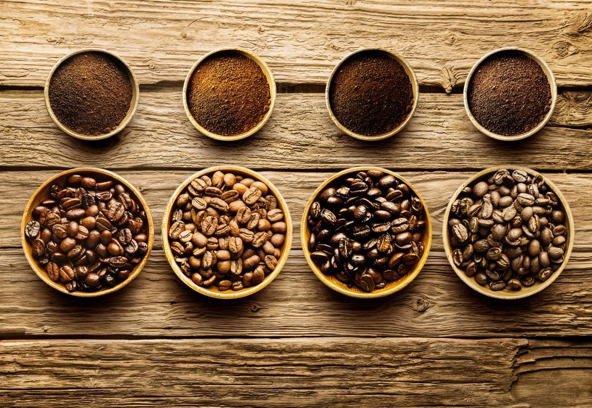

10 Best Coffee Beans in The World
Dec 27, 2021

If you’re looking for a unique taste, a new roast, or a special treat, read about our top choices for the 10 best coffee beans. Every self-proclaimed coffee snob will have nothing less than whole coffee beans to start, but for those who want the convenience of pre-ground and those who need a little caffeine in their lives, we’ve got a little something for you too.
The 10 Best Coffee Bean Brands in the World
- Lifeboost Pacamara Limited Collection Coffee Beans — Best Overall
- Volcanica Tanzania Peaberry Coffee Beans
- Koffee Kult Dark Roast Coffee Beans
- Kona Gold Whole Bean Coffee
- Kicking Horse Coffee Beans
- Death Wish Coffee
- Lavazza Super Crema Whole Bean Coffee Blend
- Cafe Don Pablo Gourmet Coffee Signature Blend
- Tiny Footprint Coffee Organic Nicaragua Coffee Beans
- JO Organic Colombian Coffee Beans